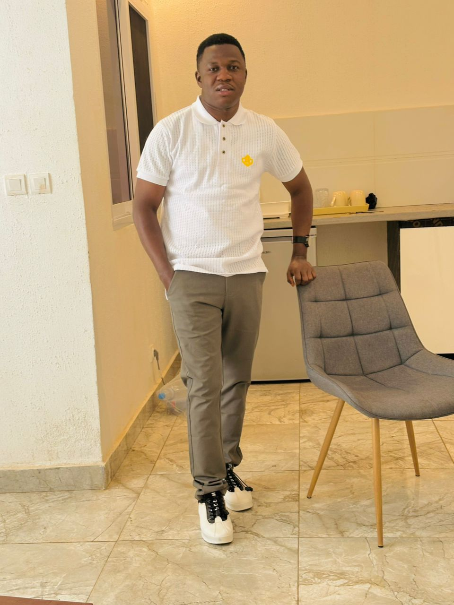

Objectif
Accompagner les equipes dans des decisions rapides et fiables grace a des analyses structurees, lisibles et directement exploitables.
Vitesse de decision+31%
Analyst BI | Data Analyst | Power BI & Excel | Je rends la donnee facile et utile
Apres l'obtention de mon Mastre Specialise en Visual Analytics & Big Data, j'ai oriente mon parcours vers l'analyse et la valorisation des donnees au service de la prise de decision.
Actuellement Analyst BI & Data Analyst chez ETS KABOUKARIA & FILS SARL (ETSKF), j'exploite des outils comme Power BI et Excel pour transformer la donnee en insights clairs, accessibles et utiles.
Toujours anime par l'innovation et l'impact de la data, je reste ouvert aux opportunites, collaborations et nouveaux defis. N'hesitez pas a me contacter pour echanger ou construire des solutions data a forte valeur ajoutee.

Accompagner les equipes dans des decisions rapides et fiables grace a des analyses structurees, lisibles et directement exploitables.
Approche claire, dashboards actionnables, et orientation resultat pour chaque mission, avec un fort focus metier.